Poc Basic App Deploy on Openshift
LOGS ( SEMBLANCE )
Deploying a basic application on OpenShift involves several steps, which include setting up the OpenShift environment, creating a new project, and deploying your application. Below is a step-by-step guide to deploying a basic application on OpenShift:
1. Set Up OpenShift Environment
Before you start, ensure you have access to an OpenShift cluster. You can use:
-
OpenShift Online (hosted by Red Hat)
-
Minishift or CRC (CodeReady Containers) for local development
CRC > Local workstation
To run CodeReady Containers (CRC) locally, follow these steps. CRC allows you to set up and run a local OpenShift 4.x cluster, which is ideal for development and testing.
Prerequisites
-
System Requirements:
-
At least 4 CPU cores.
-
Minimum 9 GB of free RAM.
-
At least 35 GB of free disk space.
-
Virtualization enabled (VT-x or AMD-V) in your BIOS.
-
Install CRC:
-
Download the latest version of CRC from the official Red Hat CodeReady Containers website.
-
Extract the downloaded file and add the
crcbinary to your PATH. -
Set Up CRC: ( path variables )
-
Open a terminal and run the following command to set up CRC:
bash crc setup
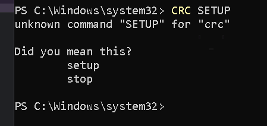
-
This command configures your environment and downloads the necessary components (like the OpenShift disk image).
-
Start CRC:
-
Run the following command to start the OpenShift cluster:
bash crc start
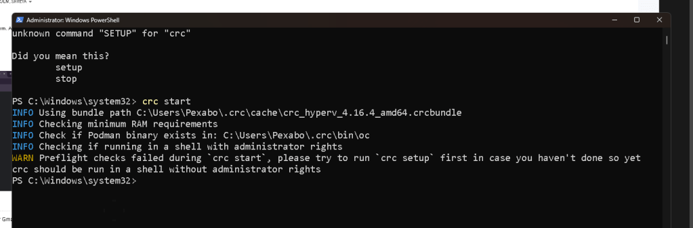
- During the start process, you’ll be asked for a pull secret. You can obtain it from the same Red Hat OpenShift page where you downloaded CRC.
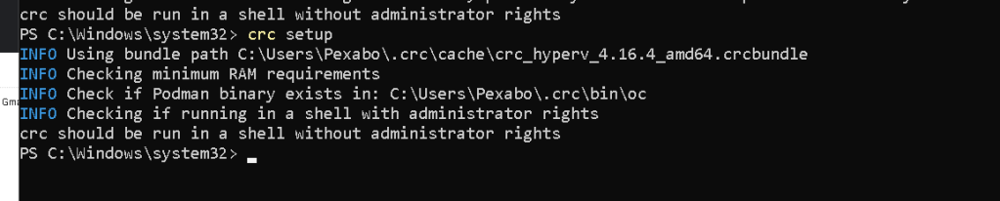
- After starting, CRC will display the credentials for accessing the OpenShift web console and the kubeadmin password.
path is already ther e
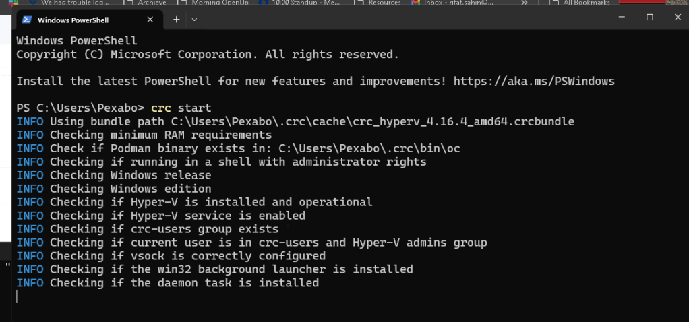
-
Access OpenShift:
-
Once CRC is running, you can access the OpenShift web console by navigating to the URL provided during the CRC start process (usually
https://console-openshift-console.apps-crc.testing). -
Log in using the credentials provided by CRC.
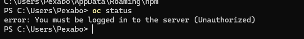
Components Coming together
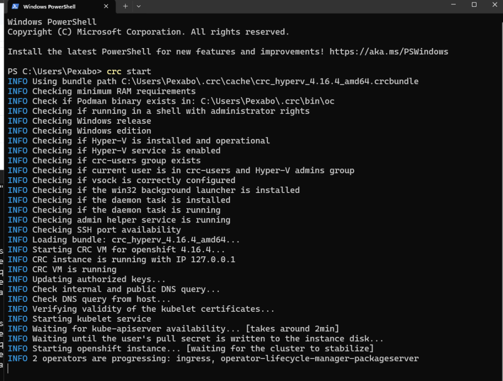
Network turning on
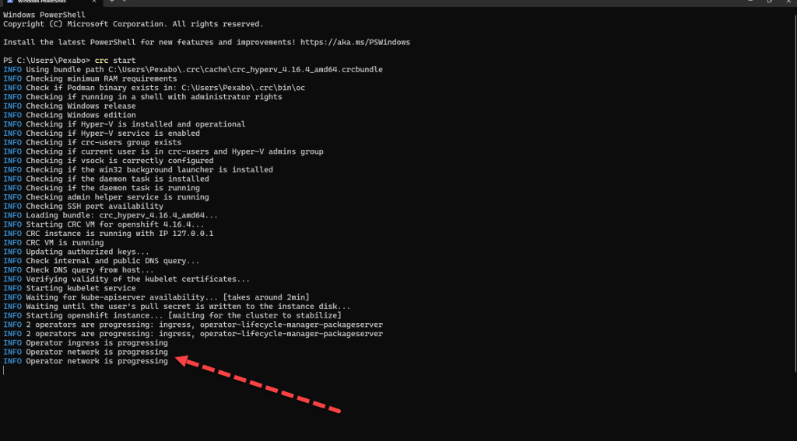
Does not overload 3995x
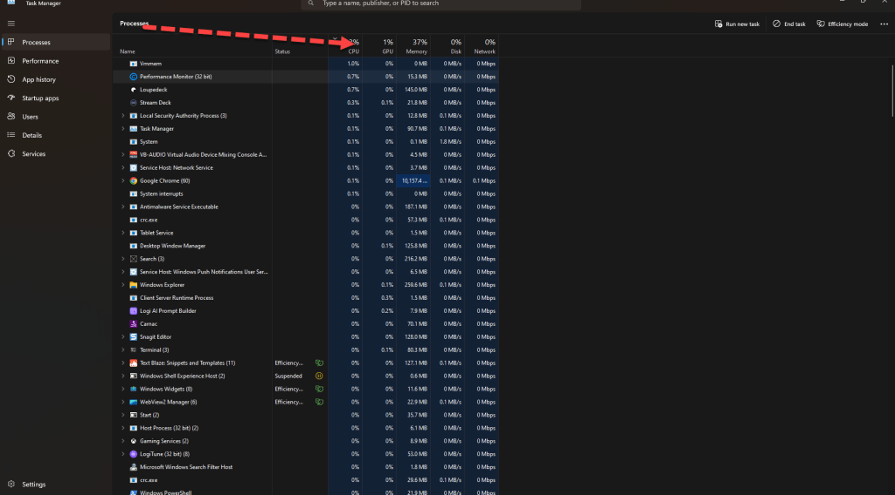
-
Interact with OpenShift:
-
You can interact with your OpenShift cluster using the
occommand-line tool, which is automatically configured by CRC. -
For example, to check the status of your cluster, run:
bash oc status

Additional Commands
- Stop CRC:
crc stop
- Delete the CRC instance: ( release system resources )
crc delete
Troubleshooting
If you encounter any issues during setup, make sure that:
-
Your system meets the required resources.
-
Virtualization is enabled in your BIOS.
-
Any firewall or security software isn't blocking CRC components.
By following these steps, you should be able to successfully run CRC locally and start experimenting with OpenShift on your machine.
2. Log in to the OpenShift Cluster
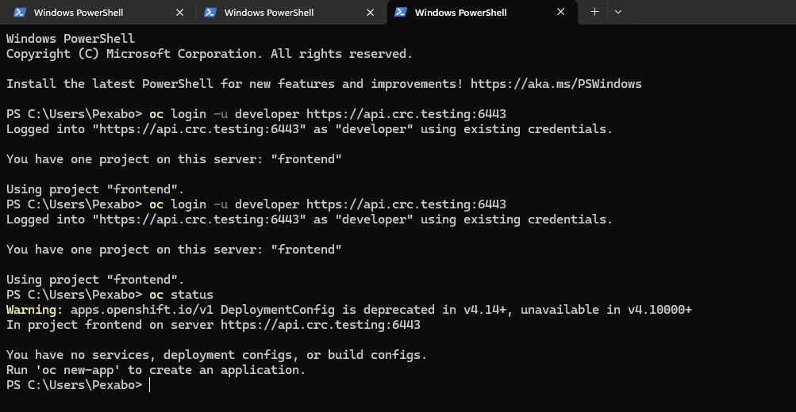
Log in to your OpenShift cluster using the oc command-line tool. If you don’t have it installed, download it from the OpenShift web console or the official OpenShift website.
oc login
You will need your credentials (username and password) or a token to log in.
3. Create a New Project
Create a new project to deploy your application. A project in OpenShift is a Kubernetes namespace with additional annotations.
oc new-project myapp-project
Replace myapp-project with a name for your project.
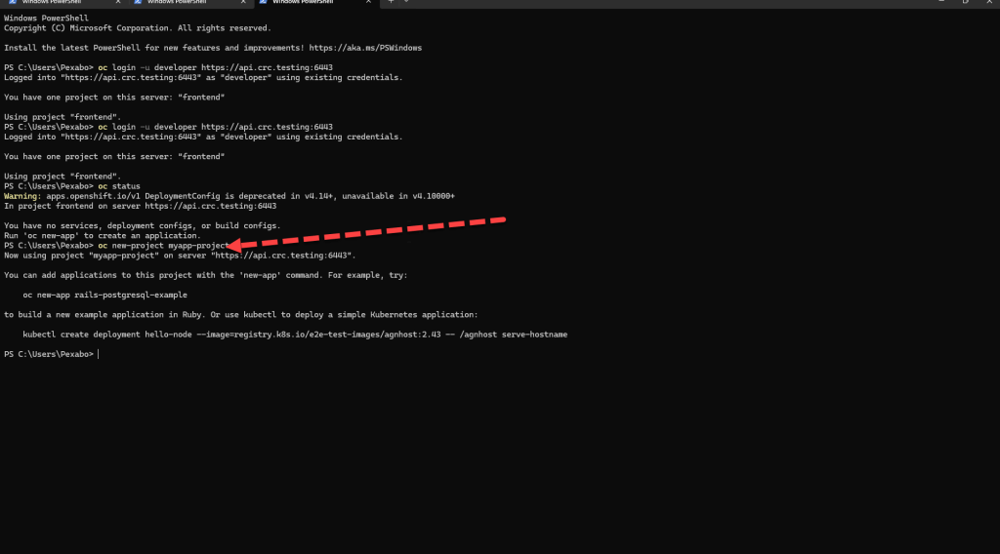
4. Deploy a Sample Application
You can deploy a sample application using OpenShift’s source-to-image (S2I) feature. This example uses a basic Node.js application available in the OpenShift samples.
oc new-app nodejs~https://github.com/sclorg/nodejs-ex -n myapp-project
Here’s what this command does:
-
nodejs~: Specifies the programming language (Node.js in this case). -
https://github.com/sclorg/nodejs-ex: Points to a sample Git repository containing the application code.
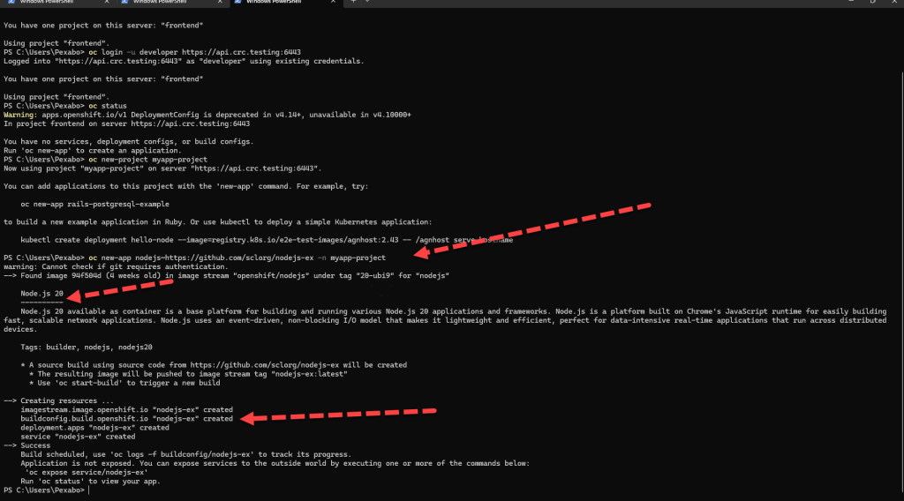
5. Monitor the Deployment
After initiating the deployment, monitor the process using the following command:
oc status
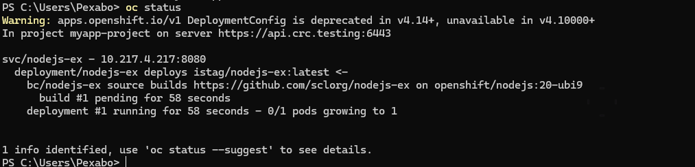
This command gives you an overview of the application deployment status. To get more detailed logs of the build process, use:
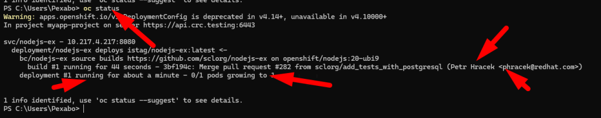
oc logs -f bc/nodejs-ex
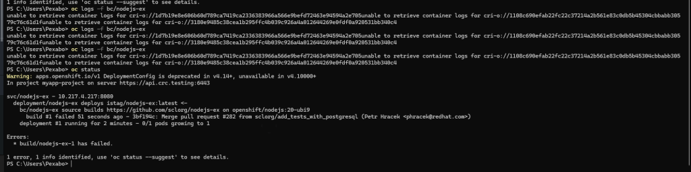
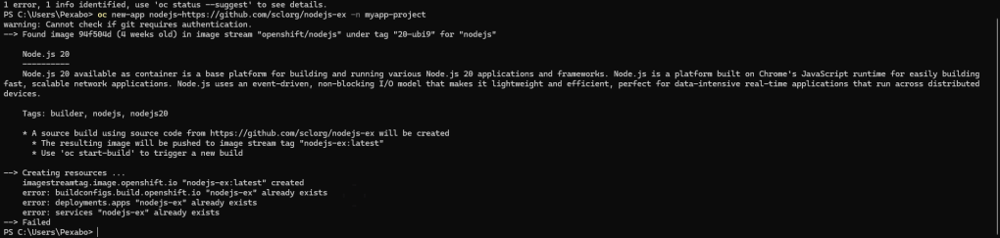
The errors you're seeing indicate that some of the resources you're trying to create already exist in the myapp-project namespace. Specifically, the buildconfig, deployment, and service for nodejs-ex are already present. This situation commonly occurs if you've previously run the oc new-app command with the same source code repository and application name.
Here are some options to resolve this:
1. Delete Existing Resources and Re-run the Command✅
If you're trying to start fresh, you can delete the existing resources before re-running the oc new-app command:
oc delete buildconfig nodejs-ex
oc delete deployment nodejs-ex
oc delete service nodejs-ex
After deleting these resources, you can re-run the oc new-app command.
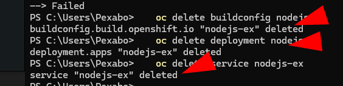
2. Use a Different Application Name
If you don't want to delete the existing resources, you can specify a different application name to avoid conflicts:
oc new-app nodejs~https://github.com/sclorg/nodejs-ex --name=my-new-nodejs-ex -n myapp-project
This will create a new set of resources under the name my-new-nodejs-ex.
3. Trigger a New Build Manually
If the existing resources are valid and you just want to trigger a new build or redeploy the application, you can do so manually:
oc start-build nodejs-ex
oc rollout restart deployment/nodejs-ex
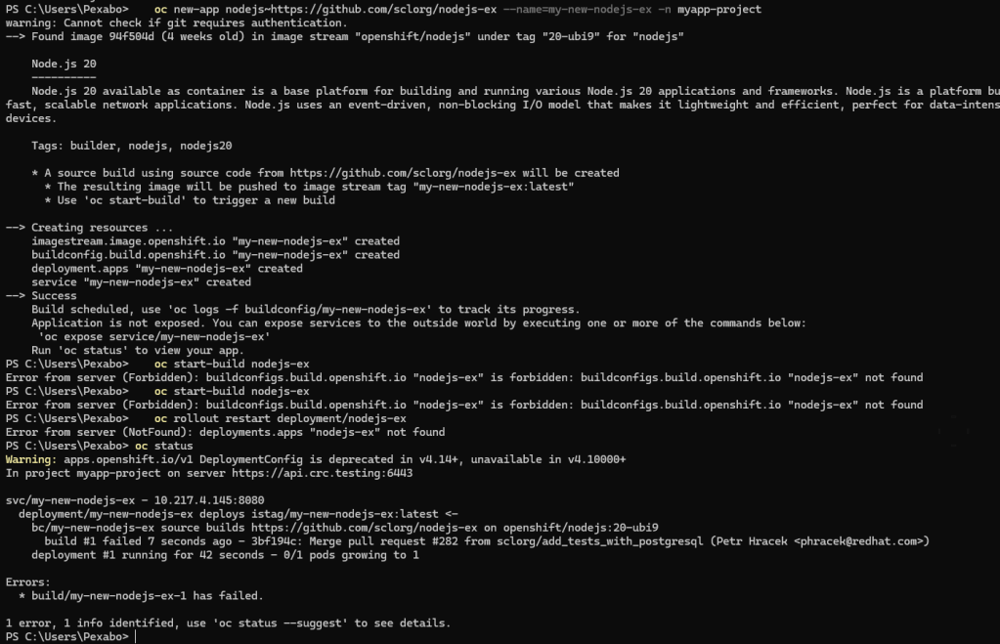
4. Inspect the Existing Resources
If you're not sure whether you need to keep or modify the existing resources, you can inspect them first:
oc get buildconfig nodejs-ex -o yaml
oc get deployment nodejs-ex -o yaml
oc get service nodejs-ex -o yaml
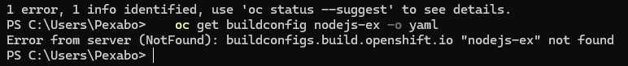
Reviewing these can help you decide whether to keep them as-is, modify, or delete them.
Choose the approach that best fits your situation. If you frequently encounter these conflicts, it might be helpful to regularly clean up unused resources or use unique names for different applications or versions.
The error you're encountering indicates that the build for your my-new-nodejs-ex application has failed. This is preventing the deployment from completing successfully. Let's break down the issue and look at potential solutions.
Key Points from the Status:
-
The build failed with the message
build #1 failed 2 minutes ago. -
The deployment is stuck, with 0/1 pods running.
Steps to Diagnose and Resolve:
- Check Build Logs:
The first step is to examine the build logs to determine why the build failed. Use the following command to retrieve the logs:
oc logs build/my-new-nodejs-ex-1
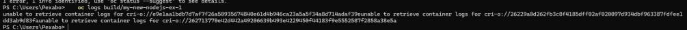
This command will provide details about what went wrong during the build process, such as issues with the source code, dependencies, or any configuration errors.
- Check Pod Logs (if any pods were created):
If the deployment started any pods before failing, checking the pod logs can provide additional insight:
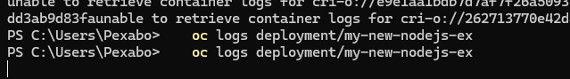
oc logs deployment/my-new-nodejs-ex
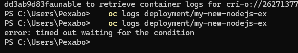
- Inspect the Build Configuration:
Verify that the build configuration is correct and that it points to the correct Git repository and branch. You can do this by running:
oc get bc my-new-nodejs-ex -o yaml
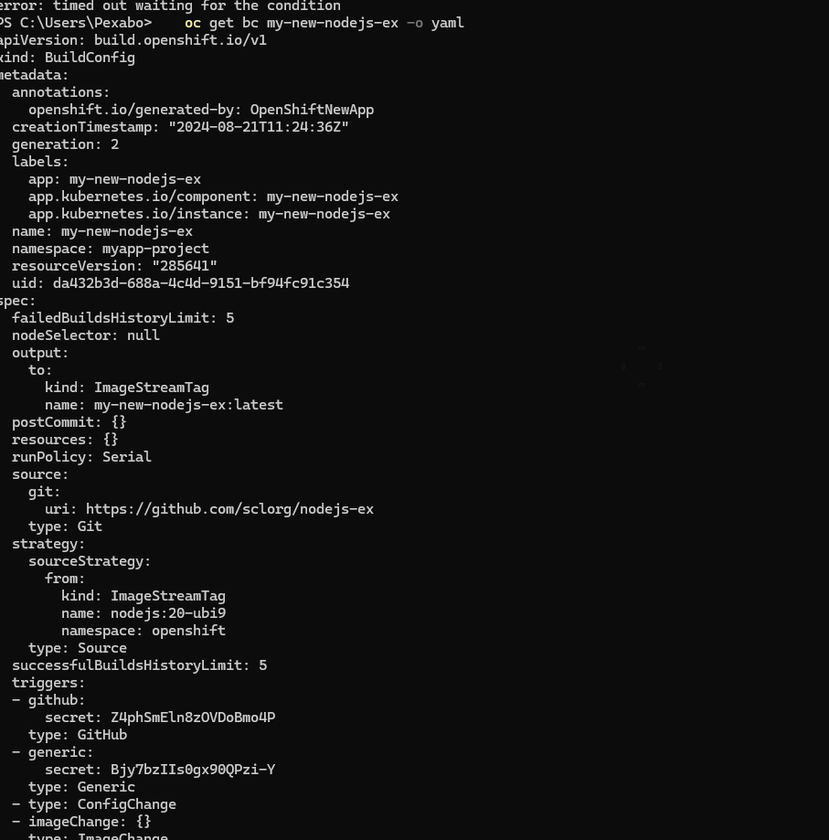
apiVersion: build.openshift.io/v1
kind: BuildConfig
metadata:
annotations:
openshift.io/generated-by: OpenShiftNewApp
creationTimestamp: "2024-08-21T11:24:36Z"
generation: 2
labels:
app: my-new-nodejs-ex
app.kubernetes.io/component: my-new-nodejs-ex
app.kubernetes.io/instance: my-new-nodejs-ex
name: my-new-nodejs-ex
namespace: myapp-project
resourceVersion: "285641"
uid: da432b3d-688a-4c4d-9151-bf94fc91c354
spec:
failedBuildsHistoryLimit: 5
nodeSelector: null
output:
to:
kind: ImageStreamTag
name: my-new-nodejs-ex:latest
postCommit: {}
resources: {}
runPolicy: Serial
source:
git:
uri: https://github.com/sclorg/nodejs-ex
type: Git
strategy:
sourceStrategy:
from:
kind: ImageStreamTag
name: nodejs:20-ubi9
namespace: openshift
type: Source
successfulBuildsHistoryLimit: 5
triggers:
- github:
secret: Z4phSmEln8zOVDoBmo4P
type: GitHub
- generic:
secret: Bjy7bzIIs0gx90QPzi-Y
type: Generic
- type: ConfigChange
- imageChange: {}
type: ImageChange
status:
imageChangeTriggers:
- from:
name: nodejs:20-ubi9
namespace: openshift
lastTriggerTime: "2024-08-21T11:24:36Z"
lastTriggeredImageID: image-registry.openshift-image-registry.svc:5000/openshift/nodejs@sha256:2dc43901e53420104d4742a201fc1f30b5c560362c542e821c07f77a805aec9a
lastVersion: 1
Look for any issues, such as incorrect URLs, branches, or build strategy errors.
- Rerun the Build:
If the issue is transient or related to a specific error that has been fixed, you can manually trigger a new build:
oc start-build my-new-nodejs-ex
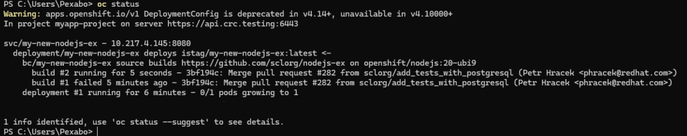
- Use
v:
Theoc status --suggestcommand can provide specific recommendations based on the current state of your project. It might suggest steps like increasing resource limits, checking network connectivity, or adjusting configurations.
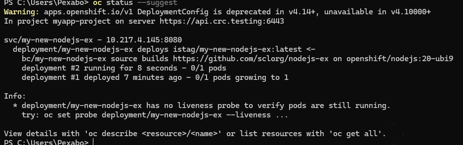
- Review Failed Build Artifacts:
If the build failed due to issues with the source code, such as conflicts or errors introduced in recent commits, you might need to review the failed build artifacts. This includes checking the state of the source repository, ensuring all dependencies are available, and that there are no syntax or logic errors.
Common Issues and Fixes:
-
Dependency Issues: Ensure that all required dependencies are available and correctly specified in your project’s configuration files (like
package.jsonfor Node.js). -
Network Issues: If the build process requires downloading dependencies from the internet, ensure that the OpenShift environment has proper network access.
-
Build Script Errors: If your project relies on custom build scripts, check them for errors or misconfigurations.
After identifying and fixing the issue, you can rerun the build and monitor its progress. If the problem persists, it may require deeper investigation, potentially involving changes to the build or deployment configuration.
It looks like you're seeing warnings about the deprecation of the DeploymentConfig API version and you're also dealing with an ongoing and previously failed build in your OpenShift project.
Steps to Delete Resources
If you want to delete the resources associated with my-new-nodejs-ex, including the service, build configurations, deployments, and any running builds, you can do so with the following commands:
- Delete the Build Config and Related Resources:
This will remove the build configuration, as well as any builds and images that were created.
oc delete bc/my-new-nodejs-ex
- Delete the Deployment:
This will delete the deployment and associated pods.
oc delete deployment/my-new-nodejs-ex
- Delete the Service:
This will delete the service associated with your application.
oc delete svc/my-new-nodejs-ex
- Delete the ImageStream (if it exists):
If an image stream was created for this application, you can delete it as well.
oc delete istag/my-new-nodejs-ex:latest
Handling the Deprecation Warning
The deprecation warning for apps.openshift.io/v1 DeploymentConfig indicates that this API version is deprecated and will be removed in a future version of OpenShift (v4.14+).
To address this:
- Switch to Deployments: Instead of using
DeploymentConfig, consider usingDeploymentresources, which are part of theapps/v1API and are the preferred way to manage deployments in newer versions of OpenShift. You can create a new deployment using a similar configuration but within theapps/v1API group.
Here’s a basic example of a Deployment YAML file:
apiVersion: apps/v1
kind: Deployment
metadata:
name: my-new-nodejs-ex
spec:
replicas: 1
selector:
matchLabels:
app: my-new-nodejs-ex
template:
metadata:
labels:
app: my-new-nodejs-ex
spec:
containers:
- name: my-new-nodejs-ex
image:
ports:
- containerPort: 8080
You would apply this with:
oc apply -f
This approach helps ensure that your application is aligned with the future direction of OpenShift.
Conclusion
After deleting the existing resources, if you intend to redeploy your application, you should consider using the Deployment resource as described above to avoid future issues with deprecated APIs. If you face any further issues during the process, feel free to ask for additional guidance.
To delete all the resources associated with your application my-new-nodejs-ex in one command, you can use the following oc command:
oc delete all --selector app=my-new-nodejs-ex
This command deletes all resources (pods, services, deployments, build configs, etc.) labeled with app=my-new-nodejs-ex. If you also want to delete any related image streams, you can add the imagestream resource:
oc delete all,imagestream --selector app=my-new-nodejs-ex
This oneliner should clean up everything associated with your application in the myapp-project namespace.
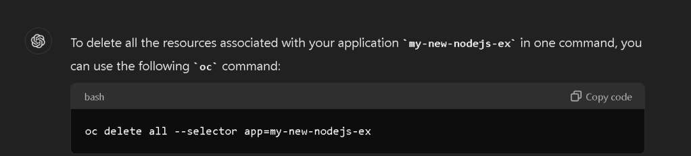
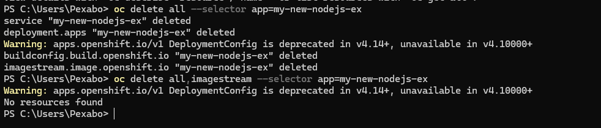
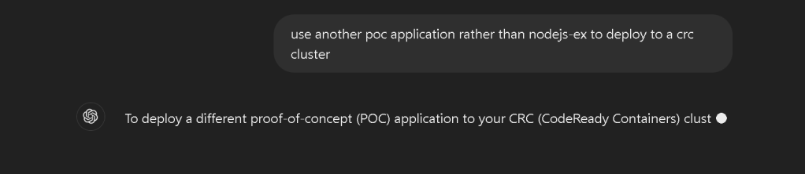
To deploy a different proof-of-concept (POC) application to your CRC (CodeReady Containers) cluster, you can choose from a variety of example applications provided by the OpenShift community. Below is a simple example of deploying a Python Flask application using oc new-app.
Example: Deploying a Python Flask Application
- Deploy the Flask Application:
Use the followingoc new-appcommand to deploy a Python Flask example application from a GitHub repository.
oc new-app python:3.8~https://github.com/sclorg/django-ex -n myapp-project
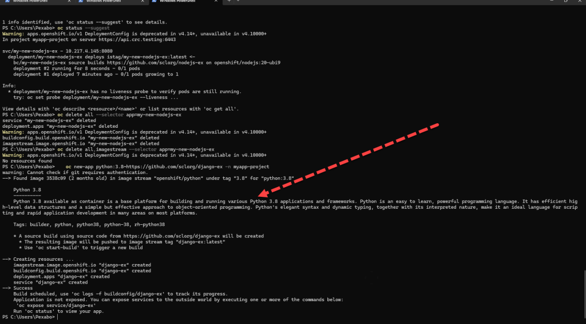
This command does the following:
-
Uses the
python:3.8image stream available in OpenShift. -
Clones the
https://github.com/sclorg/django-exrepository, which contains a basic Django application (similar to Flask). -
Creates a new application in the
myapp-projectnamespace. -
Monitor the Build and Deployment:
You can monitor the build and deployment process using:
oc logs -f bc/django-ex
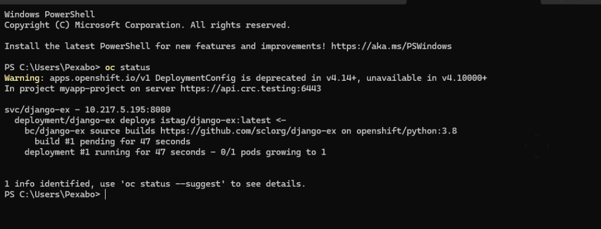
This will show you the logs for the build process. Once the build is complete, OpenShift will automatically deploy the application.
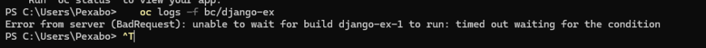
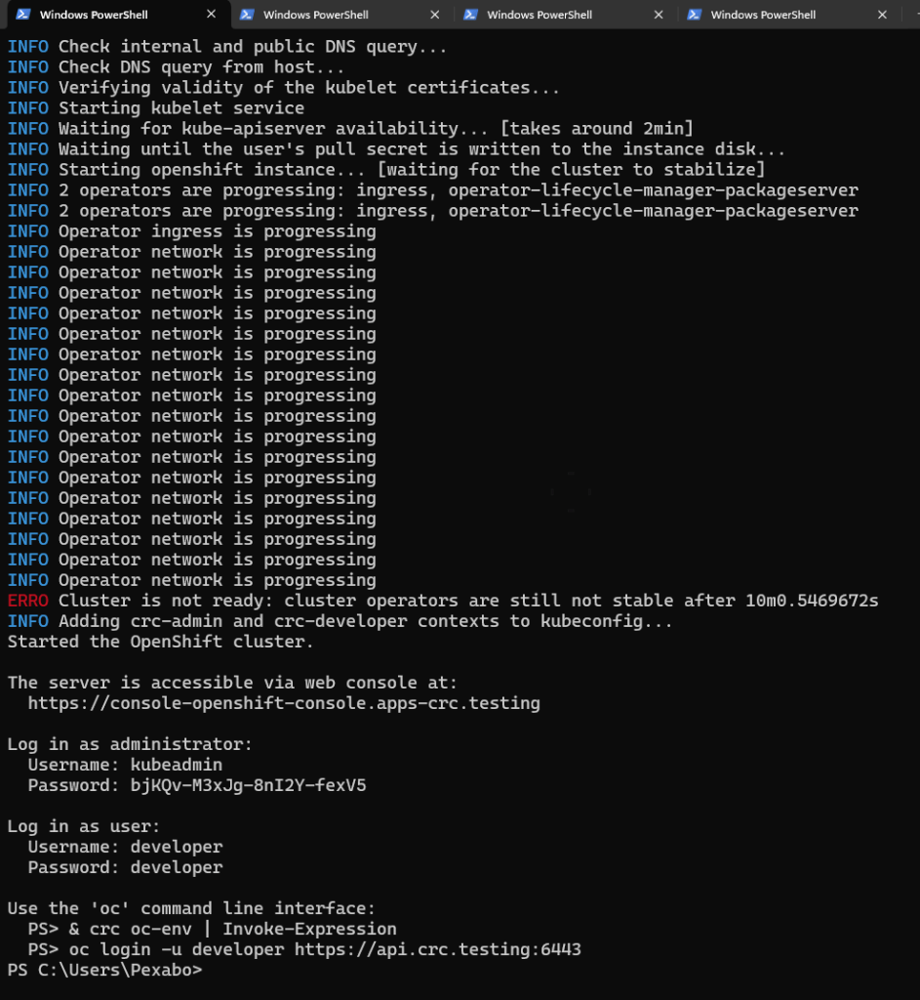
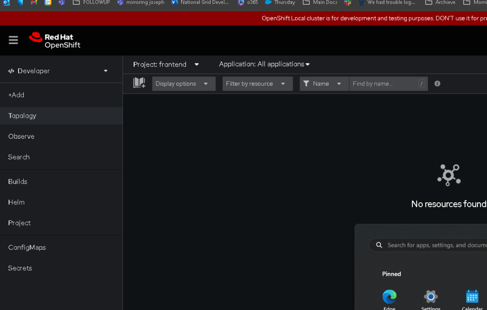
administrator
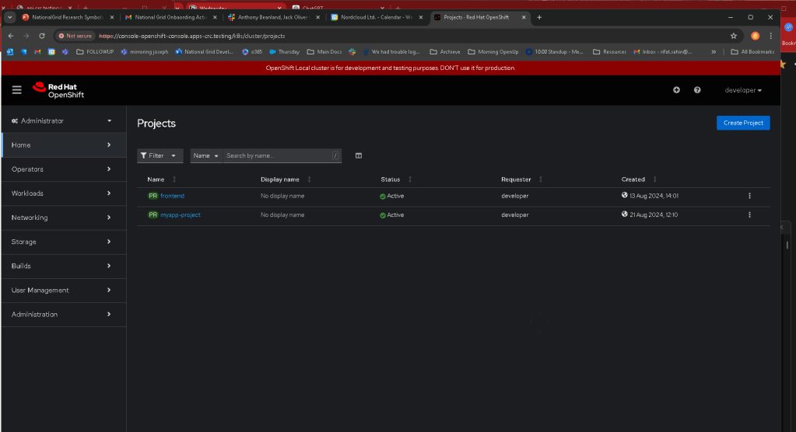
workload
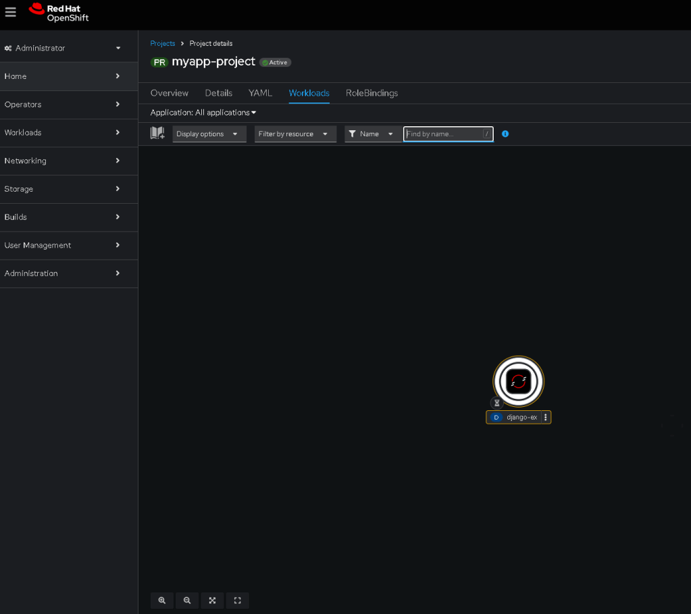
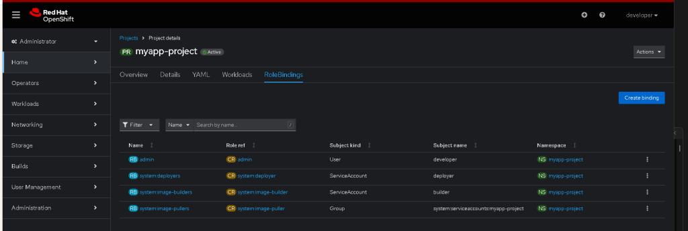
Node low on empheral storage ( temp storage )
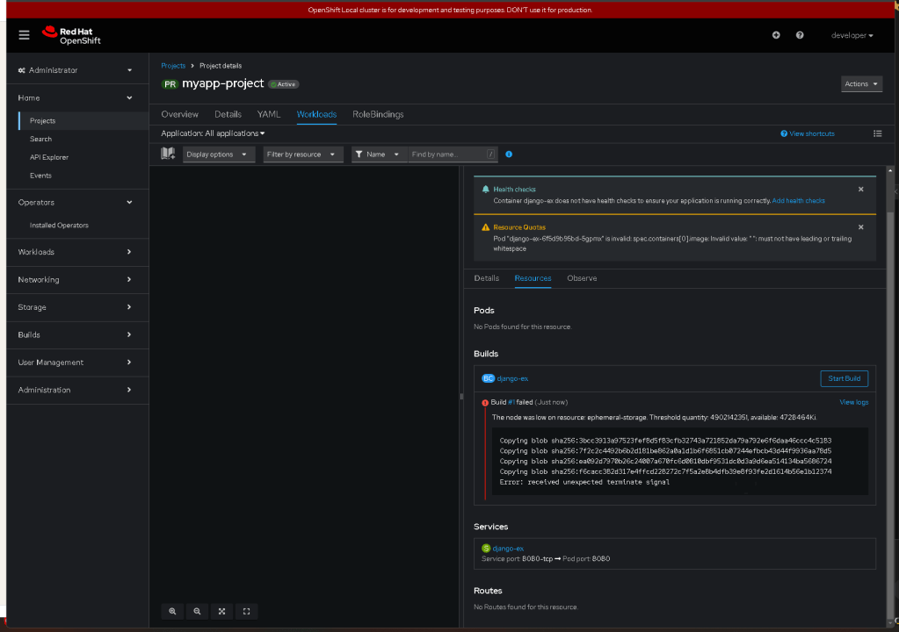
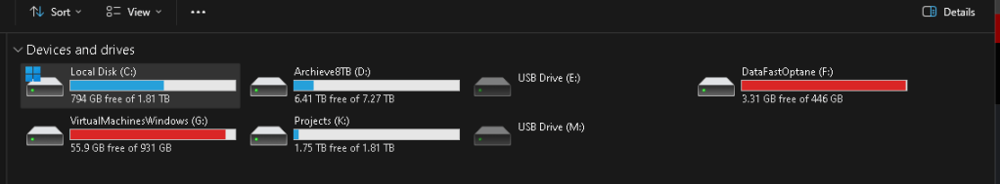
The message indicates that the node in your OpenShift cluster is running low on ephemeral storage, which is temporary storage typically used by containers for tasks like storing logs, temporary files, and caches. The node has reached the threshold where it's considered to be critically low on available ephemeral storage, which can lead to problems with scheduling new pods or even impact the running of existing ones.
Breakdown of the Message:
-
Node Low on Resource: The node is running low on ephemeral storage.
-
Threshold Quantity:
4902142351is the threshold in bytes (about 4.9 GB) at which the system starts reporting low storage. -
Available:
4728464Kiis the available storage in kibibytes (~4.5 GB).
What This Means:
When a node reaches this low-storage threshold:
-
New pods that require storage might not be scheduled on this node.
-
Existing pods that are heavily using ephemeral storage might face issues or get evicted.
-
System services and logging mechanisms might also be impacted.
Possible Actions:
-
Check Disk Usage:
-
Investigate which pods or processes are consuming the most ephemeral storage on this node.
-
Use tools like
du(disk usage) to see what's taking up space. -
Clean up unnecessary files or logs if possible.
-
Scale Up Resources:
-
Consider adding more nodes to your cluster to distribute the load.
-
Increase the ephemeral storage available to this node, if possible.
-
Evict Pods:
-
Identify non-essential or resource-heavy pods and consider evicting or rescheduling them on other nodes with more available storage.
-
Persistent Storage:
-
Use persistent volumes for storing data instead of relying on ephemeral storage, especially for critical applications.
-
This reduces the dependency on ephemeral storage and prevents such issues from occurring frequently.
-
Monitor Storage:
-
Set up monitoring and alerts for storage usage on your nodes to catch this issue before it becomes critical.
-
Tools like Prometheus and Grafana can be helpful in monitoring and visualizing storage trends.
By addressing the storage issue promptly, you can ensure that your node remains healthy and can continue to run workloads effectively without disruption.
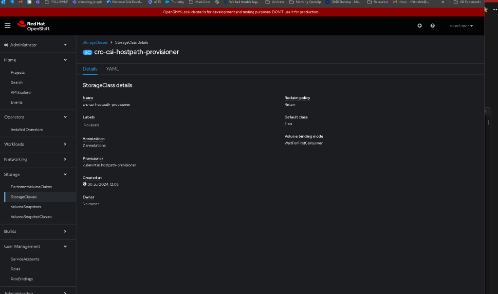
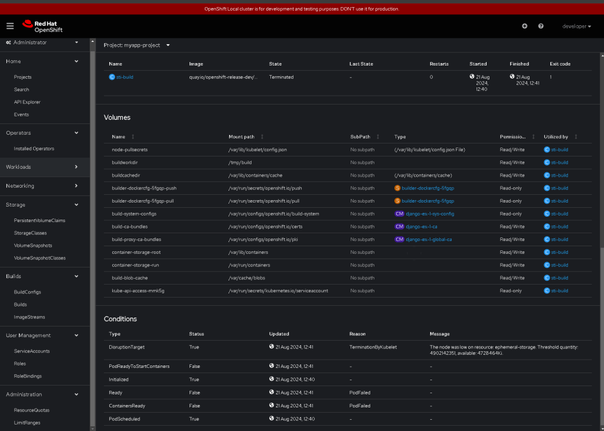
In CodeReady Containers (CRC), increasing the available storage involves increasing the disk size allocated to the CRC virtual machine. Here's how you can do that:
Steps to Increase Storage in CRC:
-
Stop CRC:
-
First, ensure that your CRC instance is stopped. You can do this by running:
bash crc stop✅
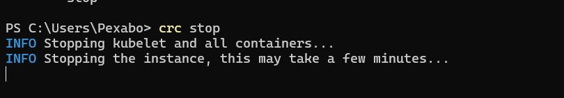
-
Resize the CRC Disk:
-
CRC uses a virtual disk image (often a QCOW2 or RAW file) to simulate the storage for the virtual machine. You'll need to resize this disk image. The process may vary depending on the host operating system: For Linux or macOS:
-
You can resize the virtual disk image using the
qemu-imgtool. First, navigate to the directory where the CRC disk image is stored. This is usually under~/.crc/machines/crc/. -
Run the following command to increase the disk size (e.g., to 100 GB):
qemu-img resize crc.qcow2 +50GThis command will add 50 GB to the current size of the disk. For Windows: -
CRC on Windows typically uses Hyper-V, so you would need to use Hyper-V Manager or PowerShell to resize the virtual disk. Using PowerShell:
Resize-VHD -Path "C:\Users\<YourUser>\.crc\machines\crc\crc.vhdx" -SizeBytes 100GBReplace100GBwith the desired disk size.
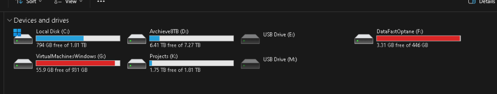
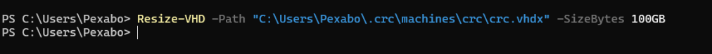
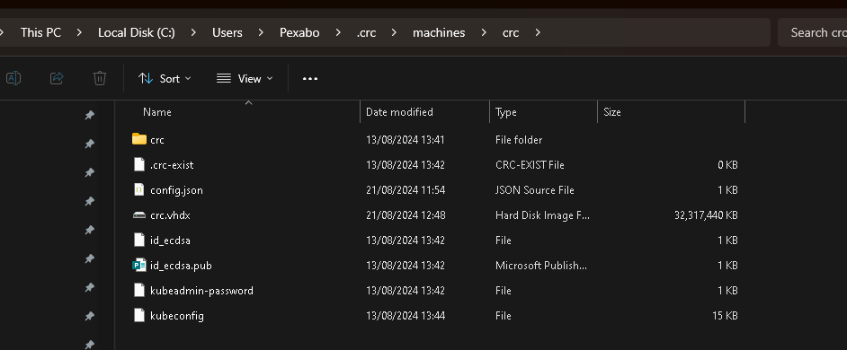
`C:\Users\Pexabo.crc\machines\crc\crc
Error caught in the ui of the openshift not the terminal
`
- Error location
outlined in the conditions part
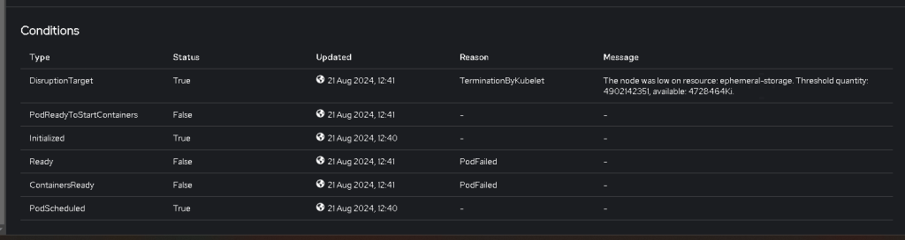
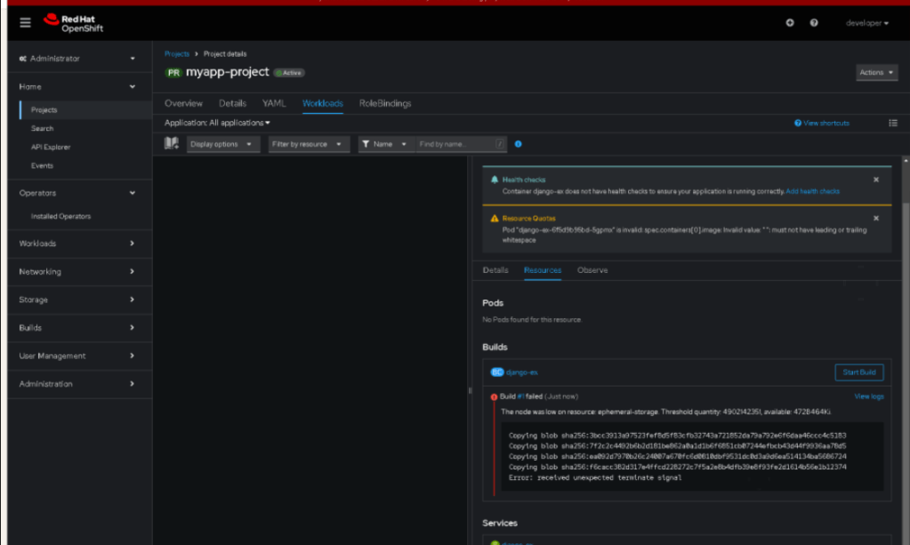
- Start CRC again to apply the changes:
bash crc start
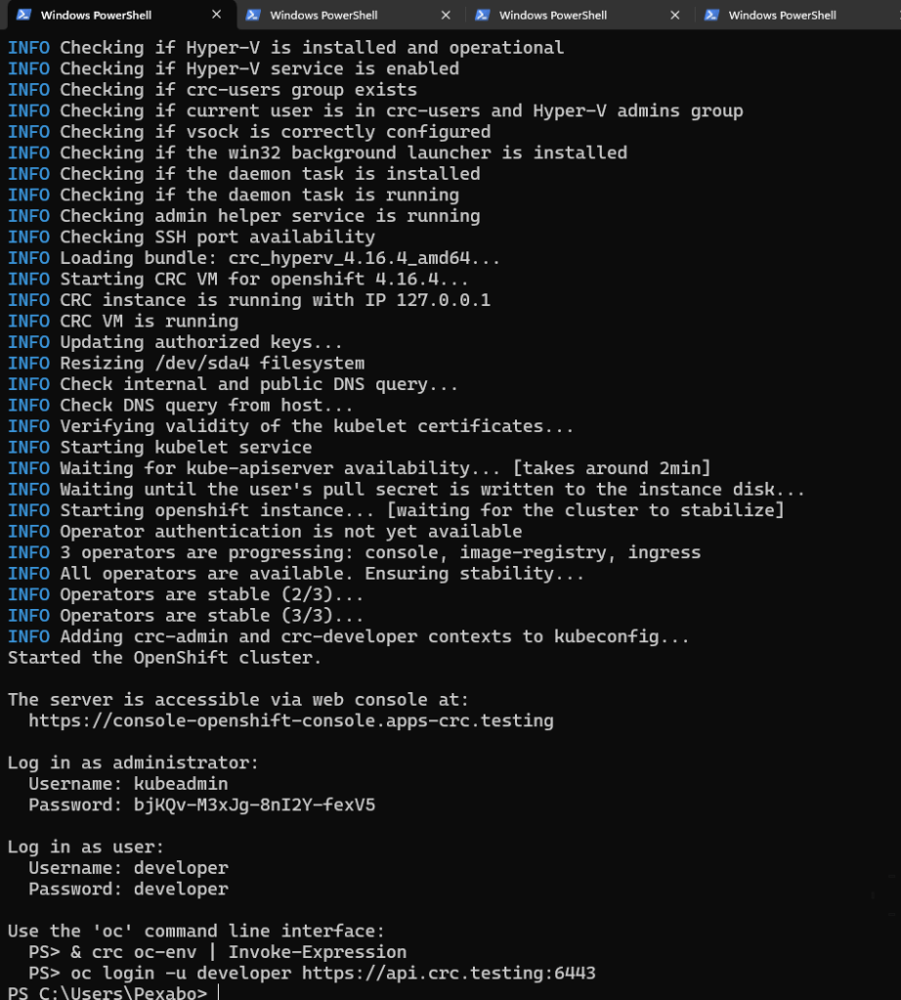
-
Expand Filesystem Inside the VM:
-
Even though the virtual disk has been resized, the filesystem inside the CRC virtual machine needs to be expanded to use the additional space.⏳⏳⏳⏳⏳⏳
-
Connect to the CRC VM using SSH:
bash crc ssh
It seems like the crc ssh command is not available in your version of CodeReady Containers (CRC). The approach to increasing storage will differ slightly depending on your setup. Here’s an alternative method to resize the CRC disk and expand the filesystem without using the crc ssh command:
Alternative Steps to Resize CRC Storage on Windows:
-
Stop CRC:
-
First, make sure that CRC is stopped:
powershell crc stop -
Resize the CRC Disk:
-
Locate the CRC virtual disk, which is typically stored in:
C:\Users\<YourUsername>\.crc\machines\crc\crc.vhdx -
Use PowerShell to resize the virtual hard disk (VHDX):
powershell Resize-VHD -Path "C:\Users\<YourUsername>\.crc\machines\crc\crc.vhdx" -SizeBytes 100GB
Replace100GBwith the new desired size. -
Restart CRC:
-
Start CRC again:
powershell crc start -
Expand the Filesystem Inside CRC:
-
Since the
crc sshcommand is not available, you need to access the CRC virtual machine differently. -
If CRC uses Hyper-V, you can connect to the virtual machine console using Hyper-V Manager:
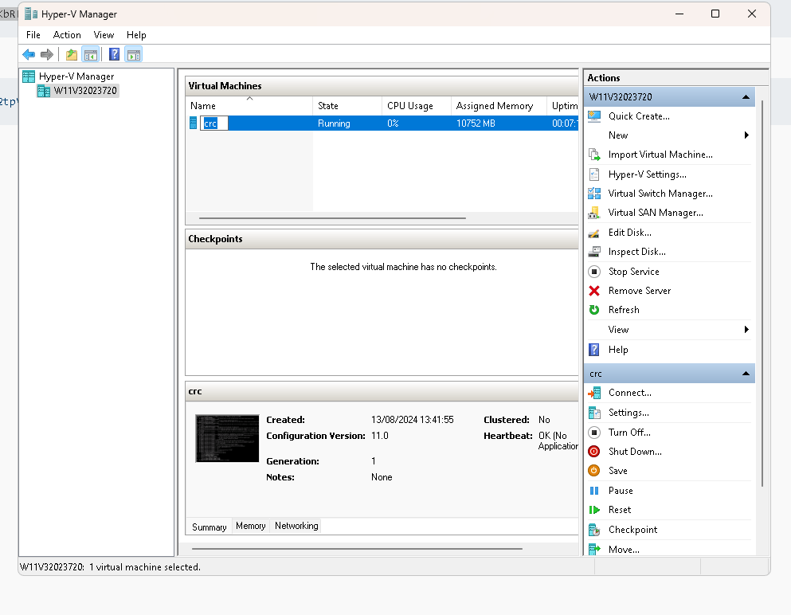
-
Open Hyper-V Manager from your Windows Start Menu.
-
Find the CRC virtual machine (
crc).
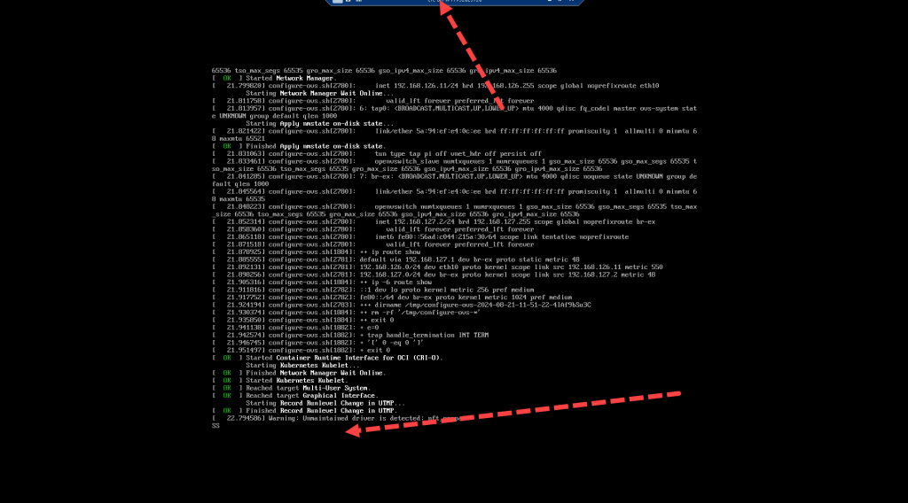
- Right-click on the VM and select Connect to open the console.
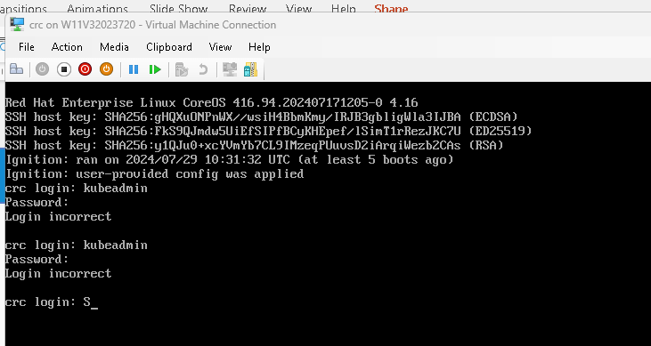
- Login using the default credentials (if prompted):
Username: core
-
Password: (usually, there is no password, but it might depend on your setup)
-
Once logged in, expand the filesystem. For example:
bash sudo growpart /dev/sda 1 sudo resize2fs /dev/sda1
Or if usingxfs:
bash sudo xfs_growfs / -
Verify the Expanded Storage:
-
After resizing the filesystem, you can verify the available storage by running:
bash df -h -
This should show the expanded storage space.
Important Notes:
-
If you cannot access the virtual machine via Hyper-V, you may need to rely on other virtualization management tools, depending on how CRC is configured on your system.
-
Make sure to properly backup any important data before resizing operations, as mistakes during the process can potentially lead to data loss.
If these steps do not work or you encounter any issues, you might want to check the CRC documentation for your specific version, as there can be differences in available commands and options depending on the release.
The image you've provided shows a console screen for the CRC virtual machine where you are attempting to log in. It seems you're using the username kubeadmin, but the login attempts are resulting in a "Login incorrect" message.
Default Login Credentials for CRC
The typical credentials to log in to the CRC virtual machine are:
-
Username:
core -
Password: Usually, there is no password required for the
coreuser. Just pressing Enter after typingcoreshould log you in.
Steps to Try:
-
Use the
coreUser: -
When prompted for the login, enter
coreas the username. -
When prompted for the password, just press Enter (leave it empty).
-
Check CRC Documentation:
-
If you customized the setup or there is an organizational policy in place, the default credentials might have been changed. You might need to check the documentation or configuration used during CRC setup.
-
SSH Keys:
-
If your CRC installation is configured to use SSH keys for authentication, you might need to access the VM using those keys rather than a password. This typically applies when connecting via SSH rather than through the console.
-
Resetting Passwords (If Applicable):
-
If you have access to the underlying system that manages the CRC virtual machine, you might consider resetting the password or configuring another user for access.
If the core user does not work, and you continue to face issues, there might be a need to explore resetting or reconfiguring the CRC VM or consulting with the specific setup documentation or team that handled the installation.
Console login on the openshift
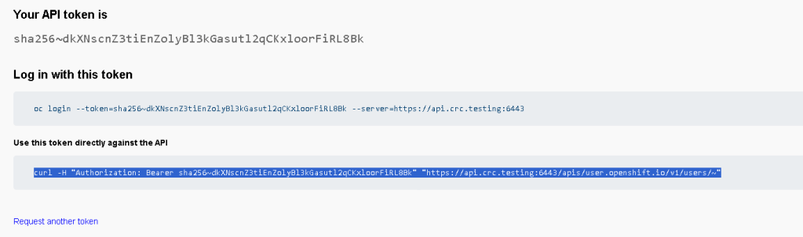
-
Check the current disk partitions:
bash df -h -
You might need to use a tool like
growpart(for resizing partitions) andresize2fsorxfs_growfs(for resizing filesystems). For example, if the root partition/dev/sda1needs to be resized:
sudo growpart /dev/sda 1
sudo resize2fs /dev/sda1
Or if using xfs:
sudo xfs_growfs /
-
Verify Storage:
-
After expanding the filesystem, check the available storage again:
bash df -h -
You should see the additional storage reflected in the output.
Final Considerations:
- Persistent Changes: If you’re running CRC for development, ensure that any additional storage is sufficient for your workloads. Remember that CRC is intended for development and testing, not production, so consider the overall system limitations.
By following these steps, you should be able to increase the ephemeral storage available to your CRC instance and mitigate the storage issues you were facing.
To recreate your CodeReady Containers (CRC) instance with more storage, you'll need to remove the existing instance and start a new one with the desired storage configuration. Here’s a step-by-step guide on how to do this:
1. Stop and Delete the Current CRC Instance
Before recreating the CRC instance, you should stop and delete the current one:
crc stop
crc delete
2. Set Up CRC with Additional Storage
To allocate more storage when you recreate CRC, you need to modify the disk size setting before starting it up again. Here’s how to do it:
-
Configure Disk Size:
-
Before starting CRC, you can set the disk size by configuring the CRC settings. This can be done using the
crc config setcommand:
bash crc config set disk-size 100
Replace100with the size in GB that you want to allocate to your CRC instance. -
Start CRC with the New Configuration:
-
Start CRC with the new configuration:
crc startDuring the startup, CRC will create a new virtual machine with the specified disk size.
3. Verify Storage Allocation
Once CRC is up and running, you can verify that the new disk size has been allocated:
-
SSH into the CRC Instance:
-
If the
crc sshcommand is available:
bash crc ssh -
Otherwise, connect via Hyper-V or the virtualization manager you are using, as you did earlier.
-
Check Disk Size:
-
Once inside the CRC VM, use the following command to check the available disk space:
bash df -h -
This should display the total and available storage, showing the newly allocated space.
Additional Considerations:
-
Persistent Storage Needs: Ensure that you allocate enough storage to cover your development needs, as increasing storage later might require similar steps.
-
Configuration: You can explore other configuration settings using
crc config viewto adjust any other parameters as needed.
By following these steps, you will recreate your CRC instance with the desired amount of storage, providing you with a fresh environment to continue your work.
SIMILAR
Sure, here's a basic installation guide for exposing the django-ex service using the oc expose command in an OpenShift environment:
-
Log in to your OpenShift cluster:
-
Open a terminal or command prompt.
-
Run the following command to log in to your OpenShift cluster:
oc login -
Follow the prompts to authenticate with your OpenShift credentials.
-
Switch to the project or namespace where your
django-exapplication is deployed: -
Run the following command to switch to the project or namespace:
oc project <your-project-name> -
Replace
<your-project-name>with the name of your project or namespace. -
Expose the
django-exservice: -
Run the following command to expose the
django-exservice:
oc expose svc/django-ex -
This command will create a new route that exposes the
django-exservice, making it accessible from outside the cluster. -
Verify the exposed route:
-
Run the following command to list the routes in your project:
oc get routes -
This will display the URL of the exposed
django-exservice. The URL will have a format similar tohttp://<route-name>-<project-name>.<cluster-domain>. -
Access the
django-exapplication: -
Open a web browser and navigate to the URL displayed in the previous step.
-
You should now be able to access your
django-exapplication through the exposed route.
That's it! You have successfully exposed the django-ex service using the oc expose command.
Here's a breakdown of the command:
-
oc expose svc/django-ex: This command creates a new route that exposes thedjango-exservice, making it accessible from outside the cluster. -
svc/django-ex: This specifies the name of the service you want to expose, which in this case isdjango-ex.
You can customize the exposed route further by using additional options with the oc expose command, such as specifying a hostname or setting TLS configuration. Refer to the OpenShift documentation for more information on the available options.
To set up a Django project using django-ex on OpenShift, follow these steps. The django-ex project is typically a sample or example Django application that is pre-configured to run on OpenShift.
Step 1: Install the OpenShift CLI
First, ensure you have the OpenShift CLI (oc) installed on your system. You can download it from the OpenShift official documentation.
Step 2: Log in to Your OpenShift Cluster
Log in to your OpenShift cluster using the CLI:
oc login
Replace <openshift-api-url> with the API URL of your OpenShift cluster.
admin login
now 65 projects
Step 3: Create a New Project in OpenShift
Create a new project (namespace) in OpenShift to contain your Django application:
oc new-project my-django-project

Step 4: Deploy the django-ex Application
The django-ex repository is typically hosted on GitHub or similar platforms. Deploy it using the following command:
oc new-app https://github.com/openshift/django-ex.git
This command will:
-
Clone the
django-exrepository. -
Create a build configuration for the Django application.
-
Deploy the application using the default Django settings.
Step 5: Expose the Service
Expose your Django application so it can be accessed from outside the OpenShift cluster:
oc expose svc/django-ex
This command creates a route to your Django application. You can find the URL by running:
oc get routes
Step 6: Access Your Application
Once the deployment is complete and the route is created, you can access your Django application using the URL provided by OpenShift.
Step 7: Monitor the Build and Application Status
You can monitor the build and application deployment status using the following commands:
oc logs -f bc/django-ex
oc status
These commands will show you the status of the build and the overall project health.
Optional: Customization and Configuration
You can customize the deployment by modifying the environment variables, build configurations, or source code directly in the OpenShift web console or using the oc command-line tool.
Step 8: Manage Your Application
You can manage scaling, environment variables, and other aspects of your application using the OpenShift web console or via the oc command line.
This process sets up a basic Django application using the django-ex example on OpenShift, providing a starting point for further development and customization.
- Expose the Service:⏳
To access the application from outside the cluster, you need to expose the service using a route:
oc expose svc/django-ex
After exposing the service, OpenShift will provide a URL where you can access the application.
- Check the Status:
Finally, you can check the status of the application to ensure everything is running correctly:
oc status
This will provide an overview of your project's state, including any errors or warnings.
Alternative POC Applications
If you prefer using a different language or framework, you can replace the repository and image stream accordingly. Here are a few alternatives:
- Go Example:
oc new-app golang~https://github.com/sclorg/golang-ex -n myapp-project

Go went online
- Ruby on Rails Example:
oc new-app ruby:2.7~https://github.com/sclorg/rails-ex -n myapp-project
- Java Example:
oc new-app java:8~https://github.com/sclorg/spring-petclinic -n myapp-project
These examples are great for testing and demonstrating the capabilities of OpenShift on your CRC environment.
6. Expose the Service
Once the application is deployed and the build is complete, expose the service to create a route (an external URL) for accessing the application.
oc expose svc/nodejs-ex
To view the route and access your application:
oc get routes
You should see an external URL that you can visit in your web browser to see the application running.
To expose a service in OpenShift after creating a new application, you can follow these steps. Assuming you have already run the command to create the new application, you can expose the service as follows:
Step 1: Create the New Application✅
You've already run the following command:
oc new-app golang~https://github.com/sclorg/golang-ex -n myapp-project
This command creates a new application in the myapp-project namespace using the source code from the specified GitHub repository.
Step 2: Expose the Service
Once the application is created, you can expose the service to make it accessible from outside the OpenShift cluster. Use the following command:
oc expose svc/golang-ex -n myapp-project
The error indicates that the service golang-ex was not found in the myapp-project namespace. This could be due to several reasons, such as the application not being created correctly or the service name being different from what you expected.
Step 1: Verify the Application Deployment
First, check whether the application was successfully deployed and that a service was created.
oc get all -n myapp-project
This command will list all resources in the myapp-project namespace, including pods, services, deployments, and routes. Look for a service that might have been created with a different name.
Step 2: Identify the Correct Service Name
If the service name is not golang-ex, identify the correct name from the output of the previous command. The service name should match what was created during the application setup.
It looks like the application was successfully built and deployed, but the service might not have been created automatically. Since there is no service listed, you'll need to manually create one and then expose it.
Step 1: Create the Service
You can manually create a service for the deployed application using the following command:
oc expose deployment/golang-ex --port=8080 -n myapp-project
before ( set svc )
after ( it should be deployment )
This command creates a service that exposes port 8080 (which is a common default for web applications) of the golang-ex deployment.
Step 2: Expose the Service
After creating the service, you can expose it to create a route:
Create service than expose service
oc expose svc/golang-ex -n myapp-project
Step 3: Verify the Route
Check the route to ensure the service is now accessible externally:
oc get routes -n myapp-project
This command will display the URL where your application is now accessible.
To explicitly display the URL of the route created for your application, you can use the following command:
oc get route golang-ex -n myapp-project --template='{{.spec.host}}'
This command will output only the URL (host) part of the route, which you can then access directly in your web browser.
If you want to get the full URL with the HTTP protocol, you can modify the command slightly:
oc get route golang-ex -n myapp-project --template='http://{{.spec.host}}'
This will display the complete URL in the format http://<your-route-url>.
You can then copy and paste this URL into your browser to access your application.
Step 4: Access the Application
Open a web browser and navigate to the URL provided by the route to access your Golang application.
If everything is correct, your application should now be publicly accessible.
Step 3: Expose the Correct Service
Once you identify the correct service name, run the oc expose command with the correct service name:
oc expose svc/
Replace <correct-service-name> with the actual name of the service.
Step 4: Troubleshoot Application Creation
If no service was created, ensure that the application creation step was successful. You might want to review the application logs to see if there were any issues during the deployment:
oc logs -f bc/golang-ex -n myapp-project
If the application was not built or deployed correctly, you might need to retry the oc new-app command or investigate further based on the logs
.
Step 5: Recreate the Application (if needed)
If the application or service was not created, you can try recreating it:
oc new-app golang~https://github.com/sclorg/golang-ex -n myapp-project
Then, repeat the steps to expose the service once the application is successfully deployed.
See it in action
Additional Steps
If you're still encountering issues, ensure that you're logged into the correct OpenShift project (namespace):
oc project myapp-project
This ensures that you're working within the correct namespace where your application and services are deployed.
This command creates a route that maps an external URL to the service created by the golang-ex application.
Step 3: Verify the Route
To check the route that was created and obtain the URL where your service is accessible, run:
oc get routes -n myapp-project
This command will list all routes in the myapp-project namespace, including the one you just created. The output will include the hostname (URL) where your application is accessible.
Step 4: Access the Application
You can now access your Golang application using the URL provided by the route. Open your web browser and navigate to the URL to see your running application.
Optional: View Application Logs
If you want to see the logs of your running application to ensure it’s running correctly, you can use:
oc logs -f bc/golang-ex -n myapp-project
This command will follow the build logs, helping you troubleshoot any issues that may have occurred during deployment.
By following these steps, you will have successfully exposed your Golang application service in OpenShift, making it accessible externally via the generated route.
7. Manage and Scale Your Application
You can scale your application by increasing the number of pods:
oc scale --replicas=3 dc/nodejs-ex
This command scales your application to run three instances of the pod.
`PS C:\Users\Pexabo> oc scale --replicas=3 dc/nodejs-ex
Warning: apps.openshift.io/v1 DeploymentConfig is deprecated in v4.14+, unavailable in v4.10000+
error: no objects passed to scale
`
8. Clean Up
After you’re done with your POC, you might want to clean up the resources:
oc delete project myapp-project
This will delete the project and all associated resources.
9. (Optional) Using OpenShift Web Console
You can also manage your application using the OpenShift web console. After logging in, navigate to your project, and you can view, scale, and manage your application through a graphical interface.
Conclusion
This guide covers the basics of deploying a Node.js application on OpenShift using the CLI. The steps can be adapted for other types of applications by modifying the oc new-app command to fit the specifics of the application’s language and source repository. OpenShift’s S2I process simplifies deployment by automatically building and deploying your application from source code.
References
To Check if CRC Can Run
To list all the directories in your PATH environment variable from which you can run executables in the command line, you can use the following commands:
Using Command Prompt (cmd)
-
Open Command Prompt in Windows Terminal.
-
Type the following command and press Enter:
echo %PATH%
This will display the full PATH variable as a single line of text. Each directory is separated by a semicolon (;).
- If you want to see the directories in a more readable format (each on a new line), you can use:
echo %PATH% | tr ";" "\n"
Note that tr might not be available by default in Windows, so this command is more commonly used in environments with UNIX-like utilities installed (like Git Bash, Cygwin, or WSL).
Using PowerShell
-
Open PowerShell in Windows Terminal.
-
Type the following command and press Enter:
$Env:PATH -split ";"
This command splits the PATH variable on each semicolon and displays each directory on a new line.
Explanation
The directories listed in the PATH environment variable are the locations where the system looks for executable files when you type a command in the command line. If a command or program is located in one of these directories, you can run it directly by name without specifying the full path.
Example Output
Here's an example of what the output might look like when you run the above command:
C:\Windows\system32
C:\Windows
C:\Windows\System32\Wbem
C:\Windows\System32\WindowsPowerShell\v1.0\
C:\Program Files\Microsoft SQL Server\130\Tools\Binn\
C:\Program Files\Git\cmd
C:\Program Files\nodejs\
C:\Users\YourUsername\AppData\Local\Microsoft\WindowsApps
Each line corresponds to a directory in which executables can be found. For example:
-
C:\Windows\system32: Contains core system utilities likecmd.exe,ping.exe,ipconfig.exe, etc. -
C:\Program Files\Git\cmd: Contains Git-related executables if Git is installed. -
C:\Program Files\nodejs\: Contains Node.js if it's installed.
You can run any executable located in these directories directly from the command line without needing to specify the full path to the executable.
If crc stuck
It appears that the process for setting up CRC (CodeReady Containers) on your system is progressing but might be stuck at the "Operator network is progressing" stage. This issue is common when the cluster operators take longer than expected to stabilize. Here are a few steps you can take to troubleshoot and potentially resolve the issue:
-
Wait a bit longer: Sometimes, the setup process can take more time, especially on systems with lower resources or network issues. Waiting for a few more minutes might allow the process to complete.
-
Check System Resources: Ensure your system meets the minimum requirements and has sufficient RAM, CPU, and disk space. You can check the system resource usage (CPU, memory) to see if the system is under heavy load, which could cause delays.
-
Check Network Configuration: Ensure that your DNS settings are correct and that there are no network issues that might prevent the operators from reaching necessary endpoints. Sometimes, network configuration issues can cause delays in operator progression.
-
Review CRC Logs: You can check detailed CRC logs to identify specific issues. The logs will provide more context on why the operator is stuck. Use the following command in PowerShell to retrieve logs:
crc log --follow
-
Increase Timeout Settings: If you have modified CRC settings, consider increasing the timeout values for operator readiness.> increase
-
Re-run CRC Setup: If the process seems completely stuck with no progress after a reasonable amount of time, you may consider stopping the CRC instance and restarting the setup process:
crc stop
crc delete
crc start
-
Update CRC: Ensure that you are using the latest version of CRC and OpenShift. Outdated versions can have bugs that might be resolved in newer releases.
-
Check for Issues in the Cluster: If the cluster starts but still has issues, you can use the
occommand-line tool to inspect the status of the cluster and troubleshoot further:
oc get co
oc describe
If these steps do not resolve the issue, providing more logs or checking the CRC documentation and community forums might be necessary to identify the problem.
**SUMMARY **
Summary: Basic App Deployment on OpenShift Using CodeReady Containers (CRC)
This guide outlines the process of deploying a basic application on OpenShift using CodeReady Containers (CRC), a local development tool for OpenShift clusters. It includes the following steps:
-
Set Up OpenShift Environment:
-
Prerequisites: Ensure your system meets the required specifications (4 CPU cores, 9 GB RAM, 35 GB disk space).
-
Install CRC: Download and install CRC from Red Hat’s official site.
-
Resize before start
-
Start CRC: Configure and start the CRC environment using commands like
crc setupandcrc start. -
Log in to OpenShift:
-
Use the
oc logincommand to access the OpenShift cluster. -
Create a New Project:
-
Create a project using
oc new-project myapp-projectto isolate your application. -
Deploy a Sample Application: ( That works be ready to change )
-
Deploy a sample Node.js application using OpenShift’s source-to-image (S2I) feature with the command
oc new-app nodejs~https://github.com/sclorg/nodejs-ex -n myapp-project.
-
Monitor Deployment:
-
Use
oc statusandoc logsto monitor the build and deployment process. -
Troubleshooting:
-
Resolve common issues such as resource conflicts, failed builds, and low ephemeral storage by using commands to delete existing resources, inspect configurations, or expand CRC storage.
-
Alternative Deployments:
-
Deploy other sample applications like Python Flask, Go, Ruby, or Java using similar commands.
-
Create Service than Expose the Service:
-
Make the application accessible by exposing the service with
oc expose svc/myapp-service. -
Get the url with route
-
Scale and Manage Applications:
-
Scale applications with
oc scaleand clean up resources after use. -
Using OpenShift Web Console:
-
Manage your application through the OpenShift web console for a graphical interface.
This guide is designed for developers who want to quickly set up and deploy applications on a local OpenShift environment using CRC.
GITHUB PROJECT
Certainly! Here's how you can incorporate the OpenShift commands used in the guide into your GitHub project. These commands can be organized under specific sections in the relevant markdown files.
1. README.md
Provide a brief overview and link to the detailed guides:
OpenShift Basic App Deployment
This repository contains guides and examples for deploying basic applications on OpenShift using CodeReady Containers (CRC). Below are links to the specific guides:
- CRC Setup: How to set up CodeReady Containers (CRC) on your local machine.
- OpenShift Deployment: Step-by-step guide for deploying sample applications on OpenShift.
- Troubleshooting: Common issues and solutions during the deployment process.
Here's a sample README.md file tailored for your project. This file will help guide users through the basic steps of deploying applications on OpenShift using CodeReady Containers (CRC).
Sample README.md
OpenShift Basic App Deployment
This repository contains a comprehensive guide for deploying basic applications on OpenShift using CodeReady Containers (CRC). It includes instructions for setting up the environment, deploying sample applications, and troubleshooting common issues.
Table of Contents
Introduction
Deploying applications on OpenShift can be complex, especially for beginners. This project simplifies the process by providing step-by-step instructions for setting up a local OpenShift environment and deploying sample applications using the OpenShift CLI (oc).
Prerequisites
Before you begin, ensure you have the following:
- Access to an OpenShift cluster (via CRC or OpenShift Online)
- Installed OpenShift CLI (oc)
- A machine that meets the minimum system requirements for CRC
CRC Setup
To get started with CRC, follow our detailed CRC Setup Guide. This guide covers everything from installation to accessing the OpenShift web console.
Deploying Applications
We provide several examples of deploying different types of applications on OpenShift:
- Deploy a Node.js Application
- Deploy a Django Application
- Deploy a Golang Application
These guides include all necessary oc commands to create projects, deploy applications, and expose them to external access.
Troubleshooting
Encountering issues? Check out our Troubleshooting Guide for solutions to common problems, such as failed builds, storage issues, and more.
Contributing
We welcome contributions to improve these guides and examples. Please fork the repository, make your changes, and submit a pull request.
License
This project is licensed under the MIT License. See the LICENSE file for more details.
Steps to Initialize the Repo and Push
- Initialize the Git Repository
git init
-
Create the
README.mdFile -
Create the file:
bash touch README.md
-
Open
README.mdin your favorite text editor (e.g., VS Code, nano, vim), then paste the content provided above into the file. -
Add the File to Git
git add README.md
- Commit the Changes
git commit -m "Initial commit: Add README.md with project overview"
-
Push to GitHub
-
First, add the remote repository:
bash git remote add origin https://github.com/your-username/openshift-basic-app-deploy.git -
Push the commit to the main branch:
bash git push -u origin main
This will initialize your repository with the README.md file, which serves as the primary guide for anyone looking to use your OpenShift deployment project.
2. crc-setup.md
Document the commands for setting up CRC:
Setting Up CodeReady Containers (CRC)
Follow these steps to set up CodeReady Containers (CRC) on your local machine.
Install CRC
-
Download CRC:
- Download the latest version of CRC from the official Red Hat CodeReady Containers website. -
Install CRC:
- Extract the downloaded file and add the CRC binary to your PATH. -
Set Up CRC:
- Run the following command to set up CRC:
bash crc setup -
Start CRC:
- Start the OpenShift cluster:
bash crc start -
Access OpenShift:
- Access the OpenShift web console using the URL provided during the CRC start process (usuallyhttps://console-openshift-console.apps-crc.testing).
- Log in using the credentials provided by CRC.
3. openshift-deployment.md
Document the commands for deploying applications on OpenShift:
Deploying Applications on OpenShift
This guide provides commands for deploying a sample Node.js application, a Django application, and a Golang application on OpenShift.
1. Log in to the OpenShift Cluster
Use the oc command-line tool to log in:
bash
oc login
2. Create a New Project
Create a new project in OpenShift:
bash
oc new-project myapp-project
3. Deploy a Sample Node.js Application
Deploy a sample Node.js application using OpenShift’s source-to-image (S2I) feature:
bash
oc new-app nodejs~https://github.com/sclorg/nodejs-ex -n myapp-project
4. Deploy a Django Application
Deploy a Django application:
bash
oc new-app python:3.8~https://github.com/sclorg/django-ex -n myapp-project
5. Deploy a Golang Application
Deploy a Golang application:
bash
oc new-app golang~https://github.com/sclorg/golang-ex -n myapp-project
6. Monitor the Deployment
Monitor the deployment process:
bash
oc status
Check build logs for a specific application:
bash
oc logs -f bc/nodejs-ex
7. Expose the Service
Create an external route to expose the application:
bash
oc expose svc/nodejs-ex
Verify the route and get the application URL:
bash
oc get routes
8. Scale the Application
Scale the number of pods:
bash
oc scale --replicas=3 dc/nodejs-ex
9. Clean Up Resources
Delete the project and all associated resources:
bash
oc delete project myapp-project
4. troubleshooting.md
Include commands useful for troubleshooting issues:
markdown
Troubleshooting Common Issues
This section includes commands to help troubleshoot common issues encountered during OpenShift deployment.
1. Delete Existing Resources
If you encounter conflicts with existing resources, delete them:
oc delete buildconfig nodejs-ex
oc delete deployment nodejs-ex
oc delete service nodejs-ex
2. Trigger a New Build
If you need to manually trigger a new build:
oc start-build nodejs-ex
3. Inspect Existing Resources
Inspect configurations to diagnose issues:
oc get buildconfig nodejs-ex -o yaml
oc get deployment nodejs-ex -o yaml
oc get service nodejs-ex -o yaml
4. Check Logs
Check logs for build or deployment issues:
oc logs build/my-new-nodejs-ex-1
oc logs deployment/my-new-nodejs-ex
5. Check Cluster Status
Check the status of the cluster:
oc status
6. Delete All Resources by Label
To delete all resources associated with a specific application:
oc delete all --selector app=my-new-nodejs-ex
7. Resize CRC Storage
If you need to resize CRC storage:
crc stop
qemu-img resize crc.qcow2 +50G # Increase by 50 GB
crc start
After resizing the storage, expand the filesystem inside the CRC VM:
sudo growpart /dev/sda 1
sudo resize2fs /dev/sda1
5. Push Changes to GitHub
After adding the commands and documentation, push the changes:
bash
git add .
git commit -m "Add OpenShift commands and documentation"
git push origin main
```
This structure ensures that all the relevant OpenShift commands are well-documented and organized within your GitHub project.
review
fix after the push
Not properly taken
Looks better
Linting matters
Everything in github and be able to remeber and be able to get it back >
Imported from rifaterdemsahin.com · 2024